Zeichnungen lesen und üben
Schweißsymbole auf Zeichnungen in deiner Sprache lesen: Symbol aus Teilen bauen, den Satz im Klartext sehen und mit Zeichnungsausschnitten und Fragen üben.
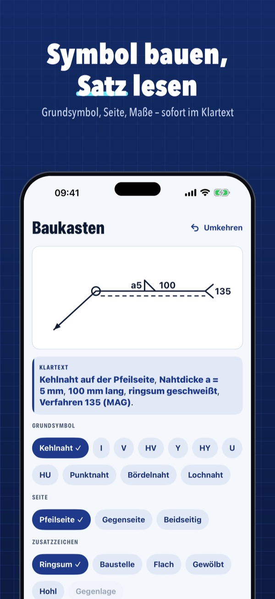
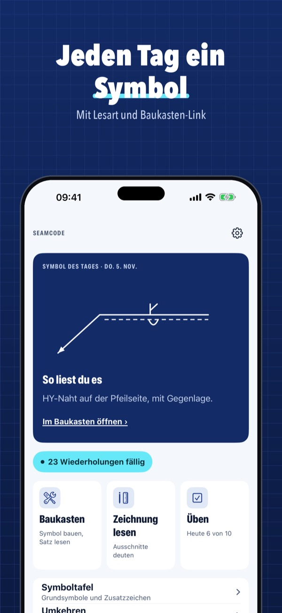
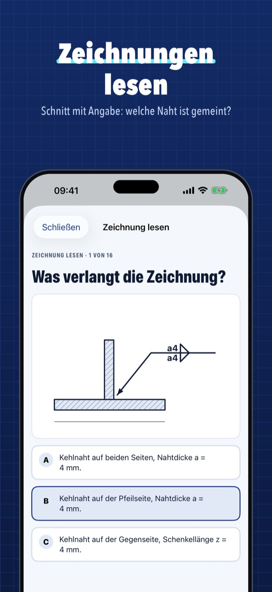
Seamcode erklärt die Schweißsymbole nach ISO 2553 (System A und B) in einfachen Worten. Du wählst Grundsymbol, Seite, Zusatzzeichen und Maße, und die App zeigt sofort, was das Symbol bedeutet. Es geht auch umgekehrt: aus dem Satz baust du das Symbol.
Die Tafel der Grundsymbole, das Symbol des Tages, der Baukasten mit Grundsymbol und Seite, 10 Fragen pro Tag und die ersten Zeichnungs- und Umkehr-Übungen gehen ohne Kauf. Seamcode Plus ist ein Einmalkauf: Baukasten mit Zusatzzeichen und Maßen, Umkehr-Übungen, Zeichnung lesen, alle Fragen mit Wiederholung, Taschenkarte als PDF. Kein Abo.
Seamcode ist eine Lernhilfe mit eigenen Zeichnungen und Erklärungen. Es ersetzt nicht die Norm, das Schriftfeld der Zeichnung oder die Vorgaben im Betrieb.
Terms of Use (EULA): https://www.apple.com/legal/internet-services/itunes/dev/stdeula/
Privacy: https://apps.baytech.nl/seamcode-eu/
Czytaj rysunki i ćwicz
Czytaj symbole spawalnicze na rysunkach po polsku: zbuduj symbol z części, zobacz zdanie zwykłym językiem i ćwicz na fragmentach rysunków i pytaniach.
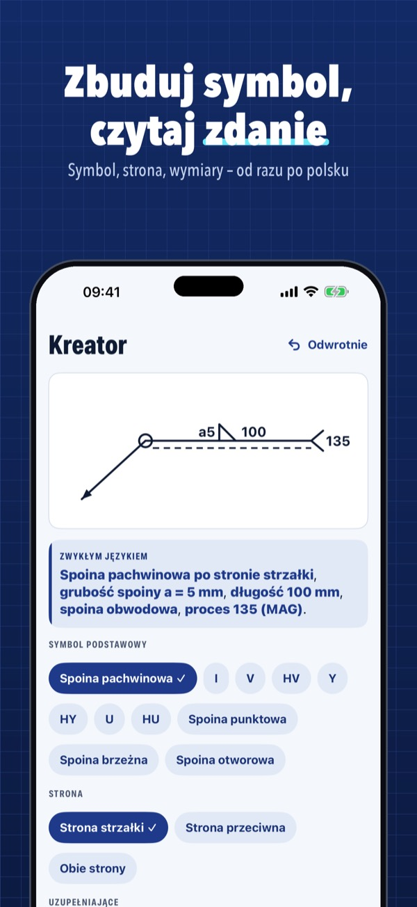
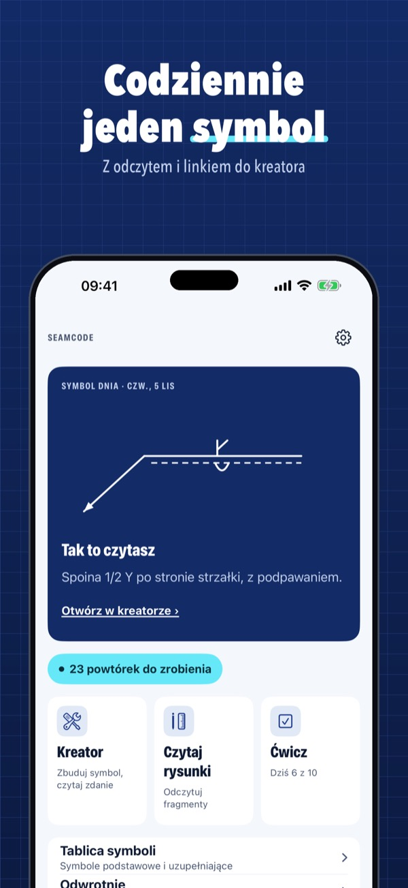
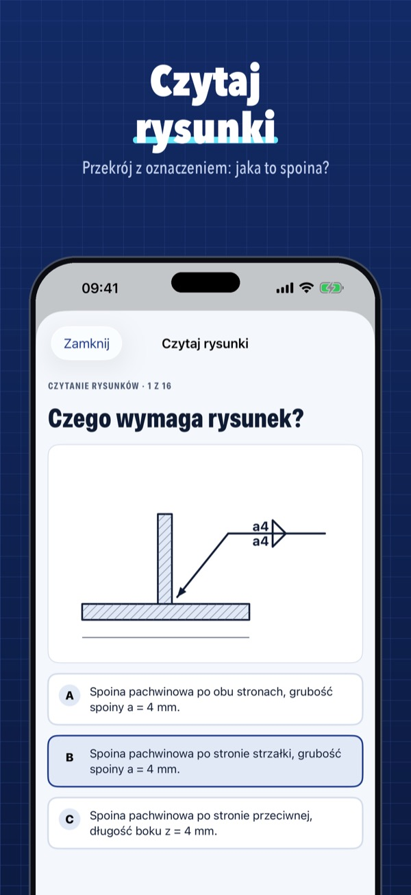
Seamcode wyjaśnia symbole spawalnicze według ISO 2553 (system A i B) prostymi słowami. Wybierasz symbol podstawowy, stronę, symbole uzupełniające i wymiary, a aplikacja od razu pokazuje, co oznacza symbol. Działa też odwrotnie: ze zdania budujesz symbol.
Tablica symboli podstawowych, symbol dnia i 10 pytań dziennie działają bez zakupu. Seamcode Plus to jednorazowy zakup: kreator z symbolami uzupełniającymi i wymiarami, ćwiczenia odwrotne, czytanie rysunków, wszystkie pytania z powtórkami, karta PDF. Bez subskrypcji.
Seamcode to pomoc w nauce z własnymi rysunkami i objaśnieniami. Nie zastępuje normy, tabliczki rysunkowej ani wytycznych zakładu.
Terms of Use (EULA): https://www.apple.com/legal/internet-services/itunes/dev/stdeula/
Privacy: https://apps.baytech.nl/seamcode-eu/
Čti výkresy a procvičuj
Čti svařovací značky na výkresech česky: sestav značku z částí, uvidíš větu srozumitelnými slovy a procvičuj na výřezech výkresů a otázkách.
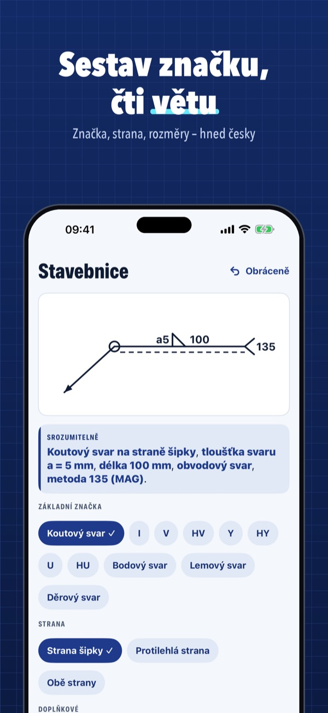
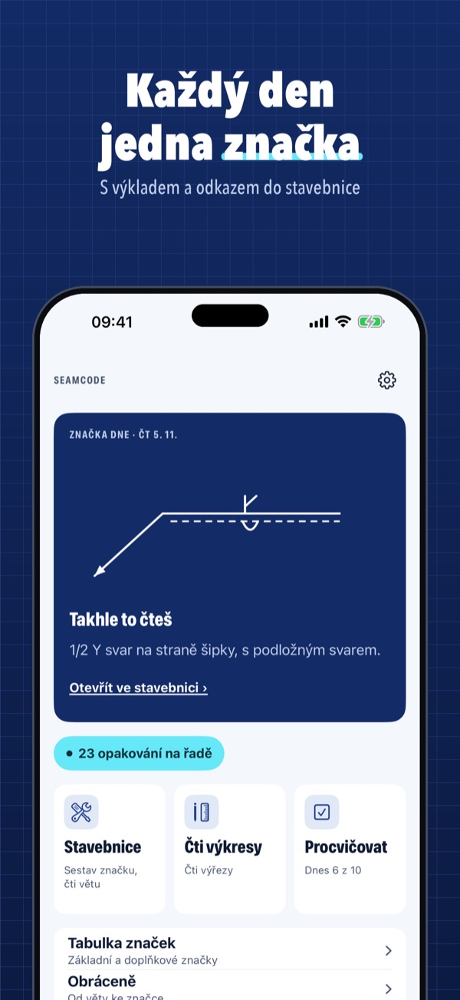
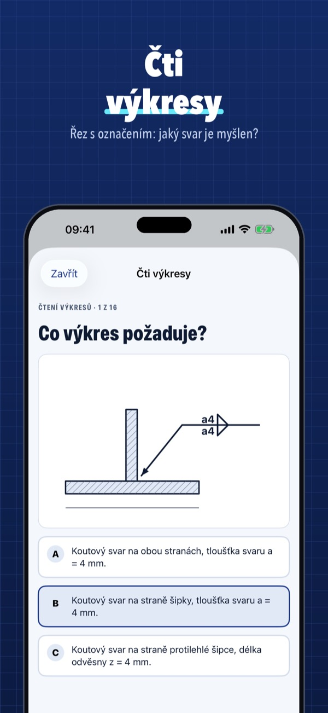
Seamcode vysvětluje svařovací značky podle ISO 2553 (systém A a B) jednoduchými slovy. Vybereš základní značku, stranu, doplňkové značky a rozměry a aplikace hned ukáže, co značka znamená. Funguje to i obráceně: z věty sestavíš značku.
Tabulka základních značek, značka dne a 10 otázek denně fungují bez nákupu. Seamcode Plus je jednorázový nákup: stavebnice s doplňkovými značkami a rozměry, obrácená cvičení, čtení výkresů, všechny otázky s opakováním, karta PDF. Bez předplatného.
Seamcode je pomůcka k učení s vlastními kresbami a vysvětlivkami. Nenahrazuje normu, popisové pole výkresu ani pokyny firmy.
Terms of Use (EULA): https://www.apple.com/legal/internet-services/itunes/dev/stdeula/
Privacy: https://apps.baytech.nl/seamcode-eu/
Leggi i disegni ed esercitati
Leggi i simboli di saldatura sui disegni in italiano: costruisci il simbolo dalle parti, leggi la frase in parole semplici ed esercitati su disegni e domande.
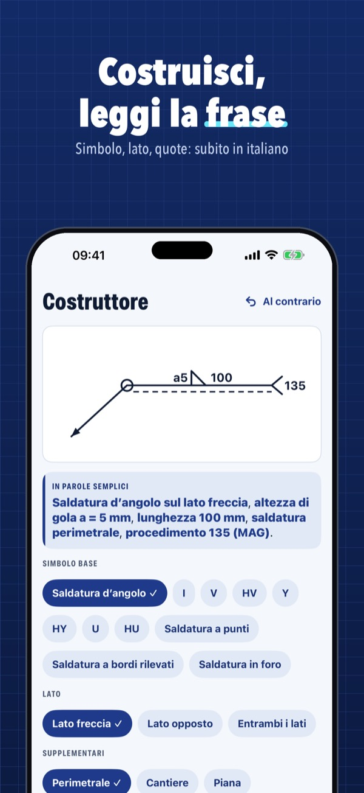
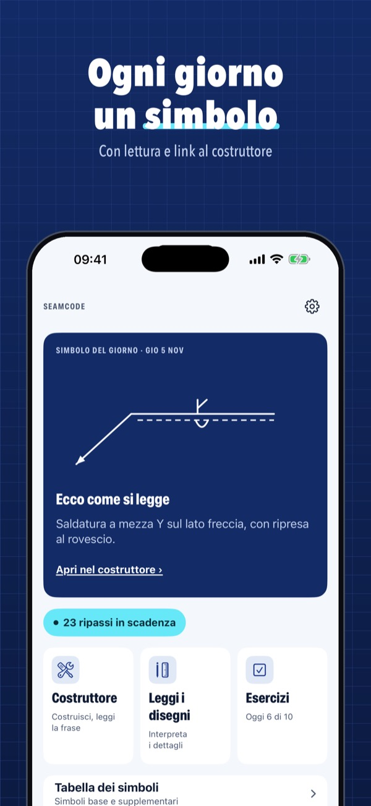
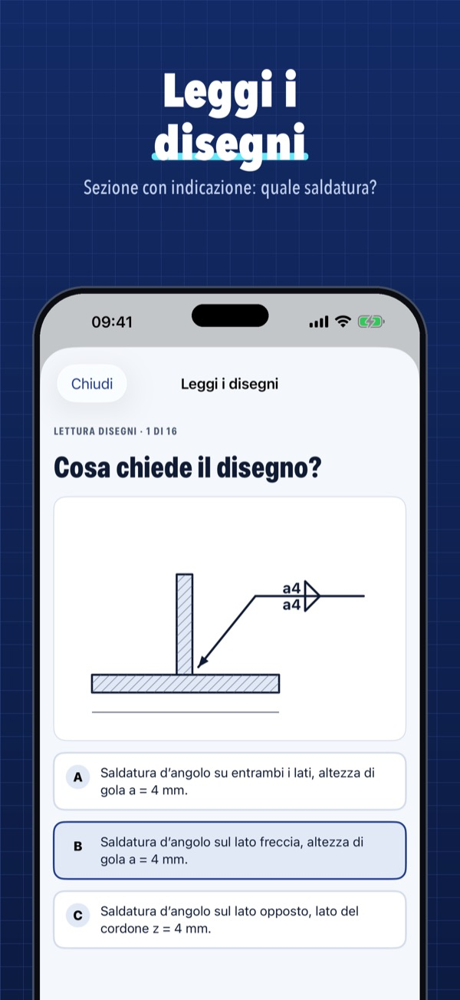
Seamcode spiega i simboli di saldatura secondo ISO 2553 (sistema A e B) con parole semplici. Scegli il simbolo base, il lato, i simboli supplementari e le quote e l’app mostra subito cosa significa il simbolo. Funziona anche al contrario: dalla frase costruisci il simbolo.
La tabella dei simboli base, il simbolo del giorno e 10 domande al giorno funzionano senza acquisto. Seamcode Plus è un acquisto unico: costruttore con simboli supplementari e quote, esercizi al contrario, lettura dei disegni, tutte le domande con ripasso, scheda PDF. Nessun abbonamento.
Seamcode è un aiuto allo studio con disegni e spiegazioni nostri. Non sostituisce la norma, il cartiglio del disegno né le istruzioni dell’azienda.
Terms of Use (EULA): https://www.apple.com/legal/internet-services/itunes/dev/stdeula/
Privacy: https://apps.baytech.nl/seamcode-eu/
Lee planos y practica
Lee los símbolos de soldadura de los planos en español: monta el símbolo por partes, lee la frase en palabras sencillas y practica con planos y preguntas.
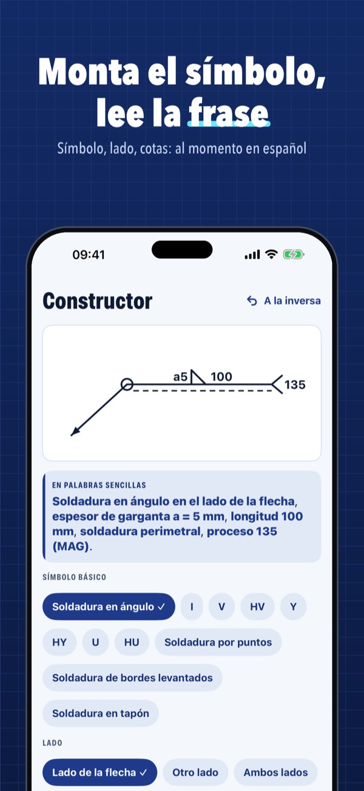
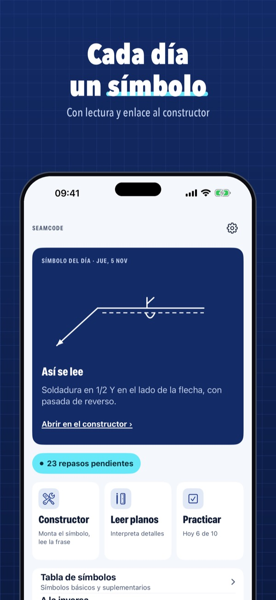
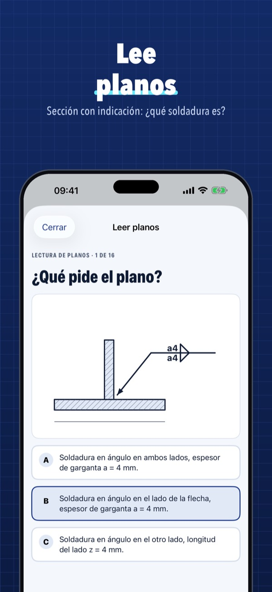
Seamcode explica los símbolos de soldadura según ISO 2553 (sistema A y B) con palabras sencillas. Eliges el símbolo básico, el lado, los símbolos suplementarios y las cotas, y la app muestra al momento qué significa el símbolo. También al revés: a partir de la frase montas el símbolo.
La tabla de símbolos básicos, el símbolo del día y 10 preguntas al día funcionan sin compra. Seamcode Plus es una compra única: constructor con símbolos suplementarios y cotas, ejercicios al revés, lectura de planos, todas las preguntas con repaso, tarjeta PDF. Sin suscripción.
Seamcode es una ayuda para aprender con dibujos y explicaciones propios. No sustituye a la norma, al cajetín del plano ni a las instrucciones de la empresa.
Terms of Use (EULA): https://www.apple.com/legal/internet-services/itunes/dev/stdeula/
Privacy: https://apps.baytech.nl/seamcode-eu/
Tekeningen lezen en oefenen
Lees lassymbolen op tekeningen in het Nederlands: bouw het symbool uit onderdelen, zie de zin in gewone woorden en oefen met tekeningdetails en vragen.
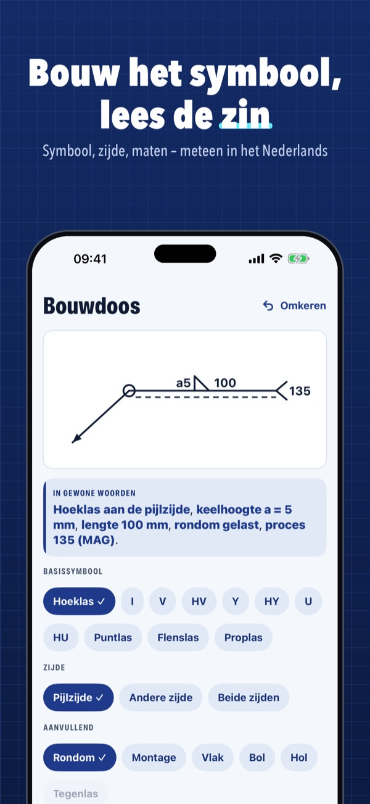
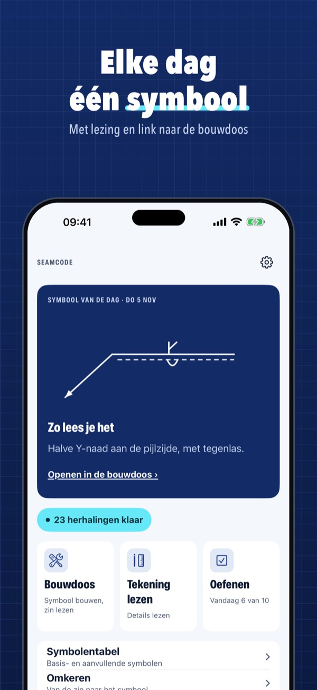
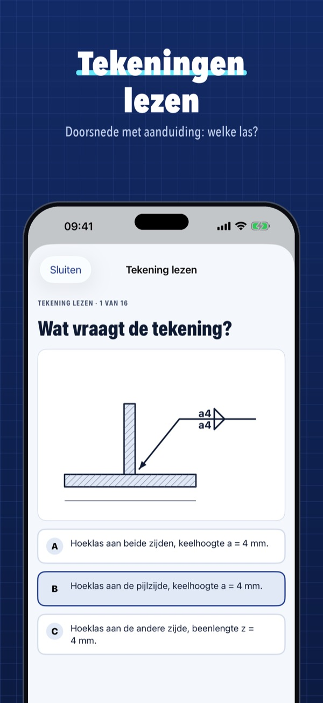
Seamcode legt lassymbolen volgens ISO 2553 (systeem A en B) uit in gewone woorden. Je kiest het basissymbool, de zijde, aanvullende symbolen en maten, en de app laat meteen zien wat het symbool betekent. Het werkt ook omgekeerd: van de zin bouw je het symbool.
De tabel met basissymbolen, het symbool van de dag en 10 vragen per dag werken zonder aankoop. Seamcode Plus is een eenmalige aankoop: bouwdoos met aanvullende symbolen en maten, omgekeerde oefeningen, tekening lezen, alle vragen met herhaling, zakkaart als pdf. Geen abonnement.
Seamcode is een leerhulp met eigen tekeningen en uitleg. Het vervangt de norm niet, en ook niet het tekeninghoofd of de afspraken in je bedrijf.
Terms of Use (EULA): https://www.apple.com/legal/internet-services/itunes/dev/stdeula/
Privacy: https://apps.baytech.nl/seamcode-eu/